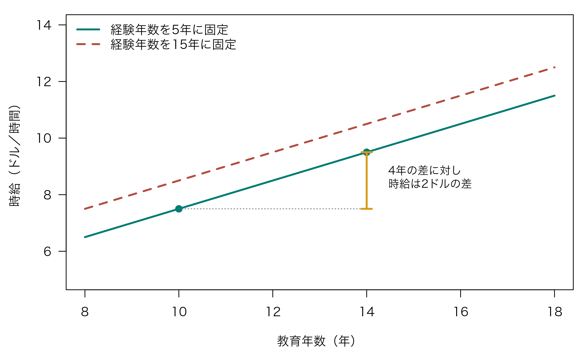
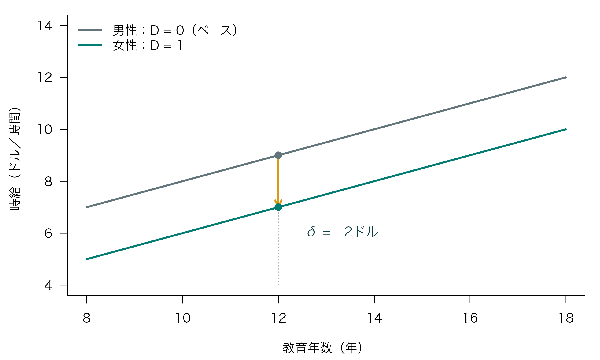
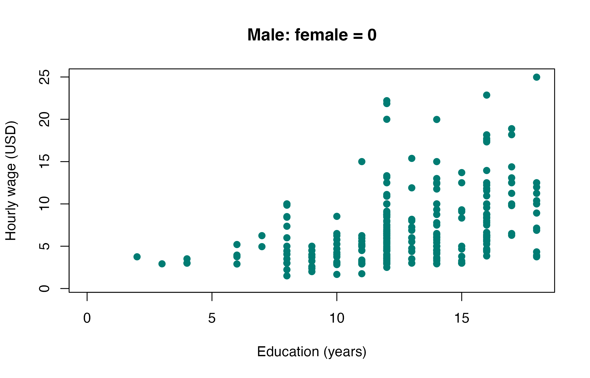
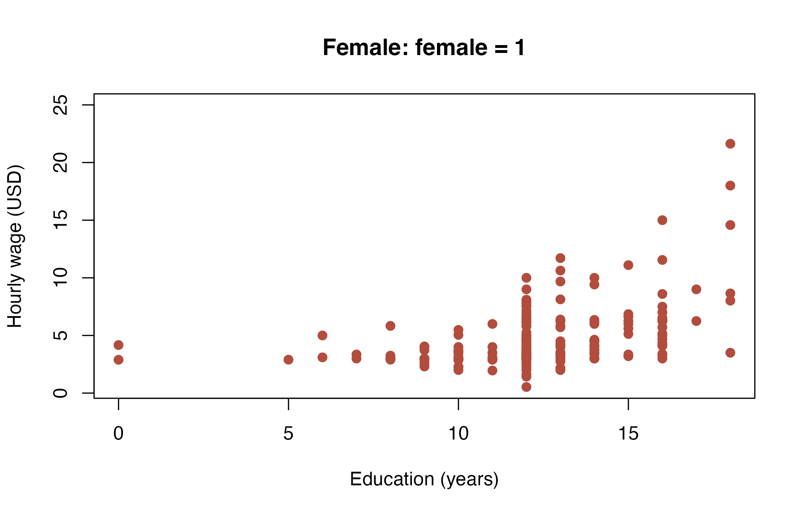
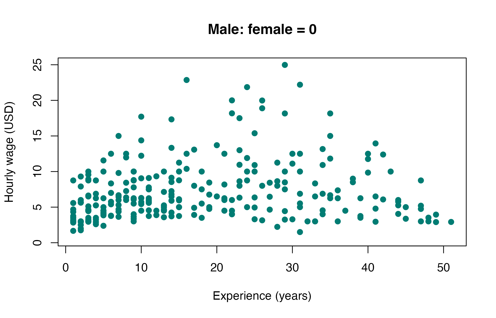
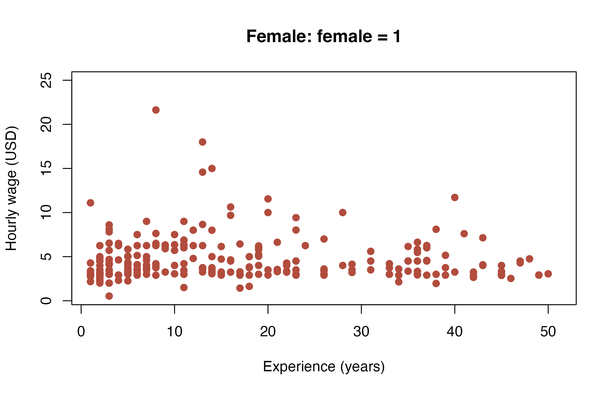

第6回：重回帰分析とダミー変数
到達目標
- 重回帰分析とダミー変数の基本を理解する。
- t検定とF検定を使い分け、個々の係数と説明変数全体の有意性を検定できる。
- Rで分析を行い、結果を解釈できる。
今回は、教科書第3章の賃金関数の例に沿って、教育年数・就業経験・性別と時給の関係を分析する。
Chapter 1｜分析課題の設定
理論的背景
教科書第3章では、教育年数と年収・時給の関係を例に、重回帰分析の意味を説明している。労働経済学や教育経済学では、教育年数が長い人ほど賃金が高いという教育プレミアムに注目する。
学校教育や就業経験を通じて知識・技能が蓄積され、生産性が高まるなら、賃金も高くなると考えられる。このため、教育年数だけでなく、就業経験も賃金に関係する要因として考える。
ただし、教育年数の長い人と短い人では、経験年数などの条件も異なる。教育年数だけの単回帰では、こうした違いによる影響も含まれる可能性がある。そこで、経験年数も説明変数に加え、他の条件を一定としたときの教育年数と時給の関係を調べる。
さらに、教育年数と経験年数が同じでも、職種や勤務先などの違いにより、属性別の賃金差が残る可能性がある。今回は性別のダミー変数も加え、条件をそろえた男女の時給差を調べる。
今回の仮説
- 経験年数を一定としたとき、教育年数が長い人ほど時給は高い。
- 教育年数と経験年数を一定としたとき、男女の時給には差がある。
Chapter 2｜重回帰分析とダミー変数の基礎
使用するデータ
今回は、Wooldridgeの計量経済学教材に収録されたwage1データを使う。1976年の米国Current Population Surveyに基づく526人のデータであり、時給と教育年数・就業経験などの関係を調べるために用いる。このデータで、教科書第3章と同じ賃金関数の分析を行う。
1行が1人、1列が一つの変数を表す横断面データである。第5回の都市別平均と異なり、今回の観測単位は個人である。授業用CSVには、次の4列を収録している。
| 列名 | 内容・単位 | 分析での役割 |
|---|---|---|
wage |
平均時給（名目額,米ドル／時間） | 被説明変数 \(Y\) |
educ |
教育年数（年） | 説明変数 \(E\) |
exper |
（潜在的な）就業経験年数（年） | 説明変数 \(X\) |
female |
原データの性別区分：女性1、男性0 | ダミー変数 \(D\) |
（潜在的な）就業経験年数（年）とは、学校を卒業した後、働き続けたと仮定した場合に積み重ねられる年数という意味である。一般に、6歳で入学すると仮定して、「年齢 − 教育年数 − 6」で計算する。例えば、30歳で教育年数が16年なら、潜在的な就業経験年数は30 − 16 − 6 = 8年となる。
この指標は、失業や育児などで働いていなかった期間を差し引かないため、実際に働いた年数とは一致しないことがある。また、現在の勤務先での勤続年数とも異なる。以降では略して「経験年数」と呼ぶ。
1. 重回帰モデル
被説明変数に影響を与える要因は、一つとは限らない。賃金関数では、教育年数だけでなく、就業経験なども説明変数として用いる。このように、複数の説明変数を用いる分析を重回帰分析という。
まず、時給を教育年数と経験年数で説明するモデルを考える。
\[ Y_i = a + b_1 E_i + b_2 X_i + u_i \]
| 記号 | データの列 | 意味 |
|---|---|---|
| \(Y_i\) | wage |
時給（1976年の米ドル／時間） |
| \(E_i\) | educ |
教育年数 |
| \(X_i\) | exper |
経験年数 |
| \(u_i\) | — | モデルに含まれる変数だけでは説明できない部分 |
2. 他の要因をコントロールする
重回帰分析では、他の要因をコントロールすることで、注目する説明変数と被説明変数の関係を調べる。
- \(b_1\)：経験年数を一定としたとき、教育年数が1年長い人の、モデル上の時給の差（ドル）。
- \(b_2\)：教育年数を一定としたとき、経験年数が1年長い人の、モデル上の時給の差（ドル）。
下の図で、「経験年数を一定とする」比較を確認しよう。横軸は教育年数、縦軸は時給であり、緑の実線は経験年数を5年、茶色の破線は15年に固定した場合を表す。同じ線に沿って比較すれば、経験年数をそろえたまま教育年数の違いを見られる。 緑の線上では、教育年数が10年から14年になると時給が7.5ドルから9.5ドルになる。教育年数4年の差に対して時給は2ドルの差なので、1年当たりの差は \(b_1=0.5\) ドルである。
単回帰で教育年数だけを用いると、教育年数と関係する他の条件の違いが、その係数に混ざることがある。重回帰では経験年数も説明変数に加えることで、経験年数をそろえた比較ができる。
また、説明変数同士の相関が非常に強いと、それぞれの関係を分けて捉えにくくなり、係数の推定が不安定になることがある。これを多重共線性という。変数は数を増やすだけでなく、理論的な背景とデータの特性を踏まえて選ぼう。
3. 切片ダミー変数
男女や雇用形態などの属性情報は、1あるいは0の値をとるダミー変数として数値化できる。今回は、元データの符号に合わせ、女性ダミー \(D_i\) を用いる。
\[ D_i=\begin{cases} 1 & \text{女性}\\ 0 & \text{男性（ベース）} \end{cases} \]
これを説明変数に加える。
\[ Y_i=a+b_1E_i+b_2X_i+\delta D_i+u_i \]
| 区分 | \(D_i\) | 回帰式の予測部分 |
|---|---|---|
| 男性（ベース） | 0 | \(a+b_1E_i+b_2X_i\) |
| 女性 | 1 | \((a+\delta)+b_1E_i+b_2X_i\) |
男女で切片の大きさが \(\delta\) だけ異なるため、これを切片ダミーという。このモデルでは教育年数・経験年数の傾きは男女で共通である。\(\delta\) は、教育年数と経験年数を一定としたときの「女性 − 男性」の予測時給の差を表す。
下の図は、経験年数を10年に固定し、男女の予測時給を教育年数ごとに描いたものである。灰色の線が男性、緑の線が女性を表す。同じ教育年数での2本の線の縦の差が、女性ダミーの係数 \(\delta\) に対応する。 例えば教育年数が12年なら、男性は9ドル、女性は7ドルなので、\(\delta=7-9=-2\) ドルとなる。2本の線が平行なのは、教育年数の傾きを男女で共通としているためである。実習ではデータから \(\delta\) を推定する。

ダミー変数にはベース（基準）が必要である。切片を含む式に男性・女性両方のダミーを入れると、合計が必ず1となり、切片と重複する。これをダミー変数の罠という。分類が \(K\) 個の場合も、一つをベースとして除き、通常は \(K-1\) 個のダミーを用いる。係数は、ベースと比べた差として読む。
重回帰でも、第5回と同じく残差の二乗和を最小にする最小二乗法を用いる。Rでは説明変数を + で並べる。
lm(wage ~ educ + exper + female, data = wages)
4. 仮説検定
個々の係数はt検定、説明変数全体の有意性はF検定で調べる。
t検定
個々の係数は、第5回と同じくt検定で調べる。例えば、\(H_0:\delta=0\) は「教育年数と経験年数を一定としたとき、男女の予測時給に差がない」という仮説である。有意水準を5%とすると、\(p<0.05\) なら棄却する。\(p\geq0.05\) なら、帰無仮説を棄却しない。
F検定
F検定では、説明変数全体の有意性を調べる。次の帰無仮説と対立仮説を立てる。
\[ H_0:b_1=b_2=\delta=0 \qquad H_1:b_1,b_2,\delta\text{のうち少なくとも一つが0ではない} \]
帰無仮説は「教育年数・経験年数・性別の係数がすべて0」という意味である。これを棄却したら、説明変数のうち少なくとも一つが時給と関係していると読む。どの係数が有意かは、それぞれのt検定で確認する。
切片を含むモデルで、説明変数の数を \(k\)、観測数を \(n\) とすると、このF統計量は次のように計算できる。\(k\) には切片を数えない。
\[ F=\frac{R^2/k}{(1-R^2)/(n-k-1)} \]
説明変数によって説明されるばらつきと、残差に残るばらつきを、それぞれの自由度で割って比較している。帰無仮説の下では自由度 \((k,n-k-1)\) のF分布を用い、F値が大きいほど帰無仮説を棄却する方向になる。今回は \(n=526\)、\(k=3\) なので、自由度は \((3,522)\) である。Rの summary() の末尾にある F-statistic と、その右側の p-value を読む。
| 検定 | 調べる仮説 | Rで読む場所 |
|---|---|---|
| 個々の係数のt検定 | 例えば \(\delta=0\) | summary() の Coefficients 表 |
| 説明変数全体のF検定 | \(b_1=b_2=\delta=0\) | summary() 末尾の F-statistic |
ここでは第5回と同じ通常の標準誤差を用いる。検定結果は、誤差の条件付き平均が0であること、観測の独立性・等分散性などの前提に依存する。
5. モデルの当てはまり
決定係数の復習
第5回で学んだ決定係数 \(R^2\) は、被説明変数の全体のばらつきのうち、回帰モデルで説明できる割合を表す。重回帰でも、切片を含むOLSでは、同じように書ける。
\[ R^2 = \frac{\text{回帰モデルで説明されるばらつき}}{\text{被説明変数の全体のばらつき}} = \frac{\displaystyle\sum_{i=1}^{n}(\hat{Y}_i-\bar{Y})^2} {\displaystyle\sum_{i=1}^{n}(Y_i-\bar{Y})^2} \]
\(\bar{Y}\) は観測値の平均、\(\hat{Y}_i\) は回帰モデルによる予測値である。分子は説明平方和、分母は全平方和を表す。\(R^2\) が1に近いほど、標本内の当てはまりがよい。
自由度調整済み決定係数
同じ観測と被説明変数を使うOLSでは、説明変数を増やすと、通常の決定係数 \(R^2\) は上がるか、同じ値にとどまる。 そのため、\(R^2\) だけで比べると、説明変数の多いモデルが有利になる。そこで、説明変数の数が異なるモデルを比較するために、変数の数を考慮した自由度調整済み決定係数（Adjusted \(R^2\)）を用いる。切片を含むモデルでは、次の式で計算する。
\[ \bar{R}^2=1-(1-R^2)\frac{n-1}{n-k-1} \]
\(n\) は観測数、\(k\) は切片を除く説明変数の数である。\(n-1\) は全平方和の自由度、\(n-k-1\) は残差の自由度を表す。
説明変数を追加しても当てはまりの改善が小さければ、調整済み決定係数は下がる。同じ観測と被説明変数を使ったモデルの比較では、この値が高いほど、説明変数の数を考慮した当てはまりがよいと読む。
今回のモデルは \(n=526\)、\(k=3\) で、通常の \(R^2\) は約0.309、調整済み決定係数は約0.305となる。Rでは summary() の Adjusted R-squared で確認できる。
6. 補足：モデルの工夫
ノート交差項・2乗項・自然対数
傾きダミーと交差項
教育年数と時給の関係が男女で異なる可能性は、\(E_iD_i\) という交差項を加えて表せる。
\[ Y_i=a+b_1E_i+b_2X_i+\delta D_i+\gamma E_iD_i+u_i \]
男性の教育年数の傾きは \(b_1\)、女性では \(b_1+\gamma\) となる。\(b_1\) を男女の平均的な傾きと読まないようにしよう。Rでは wage ~ educ * female + exper と書く。* は主効果と交差項をまとめて含める指定である。
2乗項
経験年数と時給の関係が直線とは限らない場合、\(X_i^2\) を加える。Rでは wage ~ educ + exper + I(exper^2) + female と指定する。経験年数の傾きは、経験年数とともに変化する。
自然対数
被説明変数を \(\ln Y_i\) にすると、教育年数の係数 \(b_1\) は、教育年数が1年長いときの時給の差をおよそ \(100b_1\) %として読める。Rでは log(wage) ~ educ + exper + female と指定する。自然対数は、値が正の変数に対して用いる。
交差項や2乗項を含む式も、係数に対して線形であれば、同じ lm() で推定できる。「線形」とは、説明変数が必ず直線の形で入るという意味ではない。今回は基本モデルを中心に扱い、これらの式は発展として確認する。
Chapter 3｜Rで一通り分析する
作業の準備
zemi.Rprojを開く。- File → New File → R Scriptから
script/lesson06.Rを新規作成する。 - data_lesson06.csv をダウンロードし、Project内の
dataフォルダに保存する。
zemi/
├── zemi.Rproj
├── data/
│ └── data_lesson06.csv
└── script/
└── lesson06.R今回はRの標準機能だけを使う。以下のコードを、スクリプトに上から順に記述して実行する。
1. データの読み込みと確認
最初に観測数、欠損値、変数の単位と範囲を確認する。
wages <- read.csv("data/data_lesson06.csv")head(wages) wage educ exper female
1 3.10 11 2 1
2 3.24 12 22 1
3 3.00 11 2 0
4 6.00 8 44 0
5 5.30 12 7 0
6 8.75 16 9 0nrow(wages)[1] 526colSums(is.na(wages)) wage educ exper female
0 0 0 0 summary(wages[c("wage", "educ", "exper")]) wage educ exper
Min. : 0.530 Min. : 0.00 Min. : 1.00
1st Qu.: 3.330 1st Qu.:12.00 1st Qu.: 5.00
Median : 4.650 Median :12.00 Median :13.50
Mean : 5.896 Mean :12.56 Mean :17.02
3rd Qu.: 6.880 3rd Qu.:14.00 3rd Qu.:26.00
Max. :24.980 Max. :18.00 Max. :51.00 table(wages$female)
0 1
274 252 526人で、使用する変数に欠損値はない。原データの区分では男性274人、女性252人である。femaleはすでに0・1のダミー変数なので、そのままモデルに入れられる。
2. 予備的分析：散布図と相関係数
時給と教育年数・経験年数の関係を、男女に分けて確認する。点一つが1人を表す。男女で分布を比較しやすいように、同じ変数の図は横軸と縦軸の範囲をそろえる。
条件抽出で、男女のデータを分ける。
wages_male <- wages[wages$female == 0, ]
wages_female <- wages[wages$female == 1, ]
wage_limits <- range(wages$wage)
educ_limits <- range(wages$educ)
exper_limits <- range(wages$exper)教育年数と時給
男性の教育年数と時給を描く。横軸は教育年数、縦軸は時給である。教育年数が12年のところに点が集中しており、全体としては教育年数が長い人ほど時給が高い傾向が見られる。一方、教育年数が同じ12年でも、時給は約2.5〜22.2ドルと広く分布している。教育年数が同じ人の間にも、時給の違いがあることが分かる。
plot(
x = wages_male$educ,
y = wages_male$wage,
xlab = "Education (years)",
ylab = "Hourly wage (USD)",
main = "Male: female = 0",
xlim = educ_limits, # xlim は横軸の範囲を指定する。
ylim = wage_limits, # ylim は縦軸の範囲を指定する。
pch = 19,
col = "#007c73"
)
女性の教育年数と時給を描く。女性も教育年数12年に点が集中し、教育年数が長い人ほど時給が高い傾向が見られる。男性の図と同じ軸で比べると、女性は低い時給のところに点が多い。例えば、教育年数12年では3〜5ドル付近に点が集中し、高い時給の点は男性より少ない。
plot(
x = wages_female$educ,
y = wages_female$wage,
xlab = "Education (years)",
ylab = "Hourly wage (USD)",
main = "Female: female = 1",
xlim = educ_limits,
ylim = wage_limits,
pch = 19,
col = "#b24c3d"
)
経験年数と時給
男性の経験年数と時給を描く。横軸は経験年数、縦軸は時給である。経験年数が短い層では低い時給に点が集まり、10〜30年程度では高い時給の点も多く見られる。40年以上では低めの時給の点が多く、中ほどの経験年数で高い時給が見られる、山形の関係がうかがえる。また、同じ程度の経験年数でも、時給には大きなばらつきがある。
plot(
x = wages_male$exper,
y = wages_male$wage,
xlab = "Experience (years)",
ylab = "Hourly wage (USD)",
main = "Male: female = 0",
xlim = exper_limits,
ylim = wage_limits,
pch = 19,
col = "#007c73"
)
女性の経験年数と時給を描く。幅広い経験年数で時給3〜5ドル付近に点が多く、経験年数に沿った時給の上昇傾向は弱い。 経験年数が短い人の中にも高い時給の人がおり、長い人の中にも低い時給の人が多い。男性の図と比べると、同じ程度の経験年数でも、点は低い時給のところに集まっている。
plot(
x = wages_female$exper,
y = wages_female$wage,
xlab = "Experience (years)",
ylab = "Hourly wage (USD)",
main = "Female: female = 1",
xlim = exper_limits,
ylim = wage_limits,
pch = 19,
col = "#b24c3d"
)
相関係数
続いて、男女を合わせた526人全体のデータで、時給・教育年数・経験年数の相関係数を求める。
# cor() に複数の数値列を渡すと、各組合せの相関行列を求める。
cor(wages[c("wage", "educ", "exper")]) wage educ exper
wage 1.0000000 0.4059033 0.1129034
educ 0.4059033 1.0000000 -0.2995418
exper 0.1129034 -0.2995418 1.0000000教育年数と時給の相関は約0.406であり、散布図で見た右上がりの傾向に対応する。一方、教育年数と経験年数には約−0.300の相関がある。散布図では男女による時給の分布の違いも見られた。そこで、次に教育年数・経験年数・性別を同じモデルに含め、他の条件をそろえたときの関係を重回帰で調べる。
3. パラメータの推定
まず、教育年数だけの単回帰と、経験年数を加えた重回帰を推定する。lm()では、説明変数を+で並べる。
model_simple <- lm(wage ~ educ, data = wages)
# 回帰式の右辺では、+ で説明変数を追加する。
model_multiple <- lm(wage ~ educ + exper, data = wages)
coef(model_simple)(Intercept) educ
-0.9048516 0.5413593 coef(model_multiple)(Intercept) educ exper
-3.3905395 0.6442721 0.0700954 教育年数の係数は、単回帰では約0.541、経験年数を加えると約0.644になる。後者は、経験年数を一定としたとき、教育が1年長い人のモデル上の時給が約0.644ドル高いと読む。
続いて、性別のダミー変数を加える。
model_dummy <- lm(wage ~ educ + exper + female, data = wages)
coef(model_dummy)(Intercept) educ exper female
-1.73448100 0.60258016 0.06424172 -2.15551716 推定した回帰式は、係数を丸めると次のようになる。
\[ \widehat{\text{時給}} = -1.734 + 0.603\,\text{教育年数} + 0.064\,\text{経験年数} - 2.156\,\text{女性ダミー} \]
- 教育年数の係数 約0.603：経験年数と性別区分を一定とすると、教育が1年長い人の予測時給は約0.603ドル高い。
- 経験年数の係数 約0.064：教育年数と性別区分を一定とすると、経験が1年長い人の予測時給は約0.064ドル高い。
- 女性ダミーの係数 約−2.156：教育年数と経験年数を一定とすると、女性の予測時給は男性より約2.156ドル低い。「女性 − 男性」の差である。
切片は教育0年・経験0年・男性という組合せでのモデル上の値である。
4. 仮説検定
個々の係数はt検定、説明変数全体の有意性はF検定で調べる。いずれも有意水準を5%とする。
t検定
他の説明変数を含めた上で、各係数が0と区別できるかを調べる。第5回と同じく両側検定を行う。
summary(model_dummy)
Call:
lm(formula = wage ~ educ + exper + female, data = wages)
Residuals:
Min 1Q Median 3Q Max
-6.3856 -1.9652 -0.4931 1.1199 14.8217
Coefficients:
Estimate Std. Error t value Pr(>|t|)
(Intercept) -1.73448 0.75362 -2.302 0.0218 *
educ 0.60258 0.05112 11.788 < 2e-16 ***
exper 0.06424 0.01040 6.177 1.32e-09 ***
female -2.15552 0.27031 -7.974 9.74e-15 ***
---
Signif. codes: 0 '***' 0.001 '**' 0.01 '*' 0.05 '.' 0.1 ' ' 1
Residual standard error: 3.078 on 522 degrees of freedom
Multiple R-squared: 0.3093, Adjusted R-squared: 0.3053
F-statistic: 77.92 on 3 and 522 DF, p-value: < 2.2e-16Coefficients表の各行のPr(>|t|)を読む。
| 係数 | 推定値（概数） | p値（概数） | 5%水準での判定 |
|---|---|---|---|
educ |
0.603 | \(<2\times10^{-16}\) | 帰無仮説を棄却 |
exper |
0.064 | \(1.32\times10^{-9}\) | 帰無仮説を棄却 |
female |
−2.156 | \(9.74\times10^{-15}\) | 帰無仮説を棄却 |
教育年数の係数は有意に正である。また、教育年数と経験年数を含めた後も、性別区分による時給差が認められる。
F検定
同じ summary(model_dummy) の末尾に、次の結果が表示される。
F-statistic: 77.92 on 3 and 522 DF, p-value: < 2.2e-16これは、\(H_0:b_1=b_2=\delta=0\) を検定した結果である。F値は約77.92、分子の自由度は説明変数の数である3、分母の自由度は \(526-3-1=522\) となる。p値は0.05より小さいため帰無仮説を棄却し、教育年数・経験年数・性別のうち少なくとも一つが時給と関係していると判断する。
5. モデルの当てはまり
先ほどの summary(model_dummy) の出力から、Multiple R-squared と Adjusted R-squared を確認する。
Multiple R-squared: 0.3093, Adjusted R-squared: 0.3053Multiple R-squared：通常の決定係数で、約0.309である。時給のばらつきの約30.9%を、この回帰モデルが説明している。Adjusted R-squared：自由度調整済み決定係数で、約0.305である。説明変数の数を考慮した当てはまりを表す。
6. 予測
教育年数と経験年数をそろえ、ダミー変数だけを変えたときの予測時給を比べる。教育16年・経験10年について、男性（female = 0）と女性（female = 1）の2行を用意する。
new_workers <- data.frame(
educ = c(16, 16),
exper = c(10, 10),
female = c(0, 1)
)
predicted_wage <- predict(model_dummy, newdata = new_workers)
predicted_wage 1 2
8.549219 6.393702 predicted_wage[2] - predicted_wage[1] 2
-2.155517 男性の予測時給は約8.55ドル、女性は約6.39ドルである。「女性 − 男性」の差は約−2.156ドルとなり、ダミー変数の係数と一致する。このモデルは両群の教育・経験の係数を共通とし、切片だけが異なると仮定している。
最後にscript/lesson06.Rを保存する。
結果を説明するときのポイント
- 一定にした条件を明示する。 「経験年数と性別区分を一定としたとき」のように比較条件を添える。
- 基準カテゴリーを確認する。 今回のダミー係数は「女性 − 男性」である。符号だけでなく、どちらを基準とした差かを確認する。
- 検定する仮説を明示する。 個々の係数はt検定、説明変数全体の有意性はF検定で調べる。
- データの時代と範囲を確認する。 1976年の米国の個人データを用い、時給の単位は当時の米ドルである。
演習問題
自動車データで重回帰分析を実行する
授業とは別のデータを使い、データの確認 → 条件抽出と作図 → 回帰分析 → 予測をRで一通り実行しよう。各問で指定したオブジェクトを作成し、結果をConsoleやPlotsに表示する。
使用するデータと準備
Rに標準で収録されているmtcarsを使う。1974年の米国誌『Motor Trend』に掲載された、1973〜74年モデルの自動車32台のデータである。今回は次の4列を使う。新しいパッケージのインストールやCSVのダウンロードは不要である。
| 列名 | 内容・単位 | 分析での役割 |
|---|---|---|
mpg |
燃費（1米ガロン当たりの走行距離、マイル）。値が大きいほど燃費がよい | 被説明変数 |
wt |
車重（1,000ポンド単位）。例：3は3,000ポンド |
説明変数 |
hp |
馬力（グロス馬力） | 説明変数 |
am |
変速機：オートマチック車0、マニュアル車1 | ダミー変数 |
出典：R公式マニュアル：mtcars。元データの32行をすべて使用し、上の4列だけを取り出す。
zemi.Rprojを開き、新しいスクリプトをscript/lesson06-practice.Rとして保存する。次のコードでR標準のデータを読み込み、演習に使う4列を取り出す。以降のコードは自分で書き加えよう。
# data() は、Rに収録されたデータセットを読み込む。
data("mtcars", package = "datasets")
cars_practice <- mtcars[c("mpg", "wt", "hp", "am")]課題6-1｜データを確認する
head()で先頭6行、nrow()で行数を表示する。colSums()とis.na()を組み合わせ、各列の欠損値の数を表示する。mpg・wt・hpの3列を取り出し、summary()で基本統計量を表示する。table()を使い、amが0の車と1の車の台数を表示する。
課題6-2｜条件抽出と散布図を作成する
amが0の行を取り出してcars_auto、1の行を取り出してcars_manualに保存する。それぞれの行数を表示する。- 全32台の
wtとmpgについて、range()で範囲を求め、wt_limitsとmpg_limitsに保存する。 - オートマチック車について、横軸を
wt、縦軸をmpgとする散布図をplot()で作成する。マニュアル車についても、別の散布図を作成する。次の指定を両方の図に加える。- 軸ラベル：
xlab = "Weight (1000 lbs)"、ylab = "Fuel economy (mpg)" - 軸の範囲：
xlim = wt_limits、ylim = mpg_limits - 点の形：
pch = 19 - 図のタイトル：オートマチック車は
main = "Automatic"、マニュアル車はmain = "Manual"
- 軸ラベル：
- 全32台の
mpg・wt・hpの3列を使い、cor()で相関行列を表示する。
課題6-3｜三つの回帰モデルを推定する
cars_practiceを使い、次の三つのモデルをlm()で推定する。モデルごとに、指定した名前で結果を保存しよう。
| モデル | 被説明変数 | 説明変数 | 保存するオブジェクト名 |
|---|---|---|---|
| 1：単回帰 | mpg |
wt |
car_model1 |
| 2：重回帰 | mpg |
wt、hp |
car_model2 |
| 3：ダミー変数を追加 | mpg |
wt、hp、am |
car_model3 |
- 三つのモデルを推定するコードを書く。いずれも
data = cars_practiceを指定し、切片を含める。amは0・1の数値のまま使う。 coef()を使い、三つのモデルの係数をそれぞれ表示する。summary()を使い、三つのモデルの推定結果をそれぞれ表示する。car_model3のsummary()出力から、次の値をスクリプトのコメント（#で始まる行）に転記する。数値の記録だけでよい。amの係数の推定値、t値、p値- 全体のF値と、そのp値
- 決定係数と自由度調整済み決定係数
課題6-4｜燃費を予測する
課題6-3で推定したcar_model3を使い、車重3,000ポンド（wt = 3）、馬力150（hp = 150）のオートマチック車（am = 0）の燃費（mpg）を予測しなさい。
最後にスクリプトを保存し、先頭から最後まで順番に実行して、結果を確認する。
ヒント操作に困ったときのヒント
- 条件抽出は
データ[データ$列名 == 値, ]と書く。行の条件の後のカンマを忘れない。 - 散布図は
plot(x = データ$wt, y = データ$mpg, ...)の形にする。...の部分に問題で指定された引数を書く。 - 回帰式は
被説明変数 ~ 説明変数1 + 説明変数2のように書く。 summary()の係数表ではEstimate、t value、Pr(>|t|)を確認する。全体のF値とp値は出力の末尾にある。- 予測用データの列名は、推定に使った変数名とそろえる。予測は
predict(モデル, newdata = 予測用データ)の形で実行する。